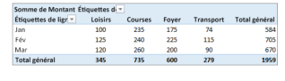

Tableau croisés dynamiques (aide Excel)
La possibilité d'analyser toutes les données de votre feuille de calcul peut vous aider à prendre de meilleures décisions professionnelles. Mais parfois, il est difficile de savoir par où commencer, particulièrement quand vous avez de très nombreuses données. Excel peut vous aider en recommandant, puis en créant automatiquement des tableaux croisés dynamiques, qui permettent de synthétiser, d'analyser, d'explorer et de présenter vos données. Par exemple, voici une liste simplifiée de dépenses :
Voici les mêmes données synthétisées dans un tableau croisé dynamique :

Méthode : Créer un tableau croisé dynamique manuellement (Aide excel)
Si vous connaissez la disposition des données que vous allez utiliser, vous pouvez créer un tableau croisé dynamique manuellement.
Ouvrez le classeur dans lequel vous souhaitez créer le tableau croisé dynamique.
Cliquez sur une cellule de la liste ou du tableau qui contient les données à utiliser dans le tableau croisé dynamique.
Sous l'onglet Insertion, cliquez sur Tableau croisé dynamique.
Bouton Tableau croisé dynamique sous l'onglet Insertion
Dans la feuille de calcul, vos données devraient être encadrées par des pointillés. Si ce n'est pas le cas, cliquez sur vos données et faites glisser le pointeur pour les sélectionner. En procédant de la sorte, la zone Tableau/Plage est automatiquement remplie par la plage de cellules que vous avez sélectionnée.
Sous Choisissez l'emplacement de votre rapport de tableau croisé dynamique, sélectionnez Nouvelle feuille de calcul pour placer le tableau croisé dynamique dans un nouvel onglet de feuille de calcul. Vous pouvez également cliquer sur Feuille de calcul existante, puis cliquer dans la feuille pour spécifier l'emplacement.
Conseil : Pour analyser plusieurs tableaux dans un tableau croisé dynamique, activez la case à cocher Ajouter ces données au modèle de données.
Cliquez sur OK.
Dans la liste des champs de tableau croisé dynamique, effectuez l'une des opérations suivantes :
Pour
Procédez comme suit
Ajouter un champ
Dans la zone NOM DU CHAMP, activez la case à cocher correspondant au champ. Par défaut, les champs non numériques sont ajoutés à la zone Ligne, les hiérarchies de date et d'heure sont ajoutées à la zone Colonne et les champs numériques sont ajoutés à la zone Valeurs.
Supprimer un champ
Dans la zone NOM DU CHAMP, désactivez la case à cocher correspondant au champ.
Déplacer un champ
Faites glisser le champ d'une zone de la liste des champs de tableau croisé dynamique vers une autre, par exemple, de Colonnes vers Lignes.
Modifier le calcul utilisé dans un champ de valeur